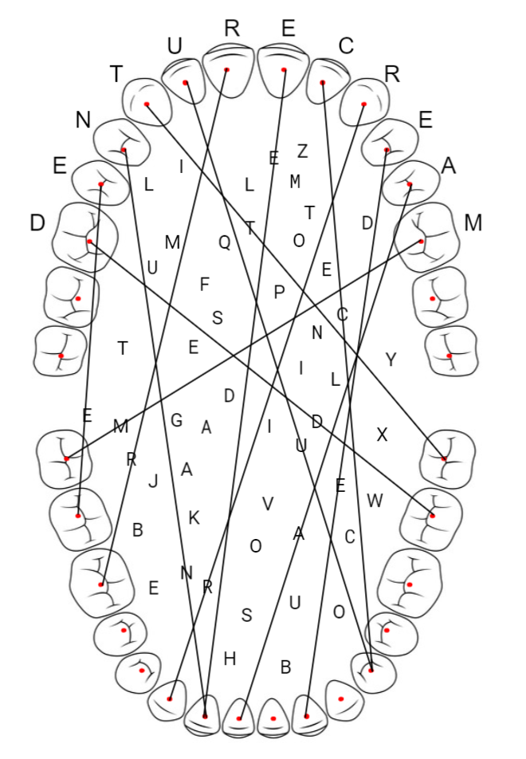

Upon opening the puzzle, teams will quickly realize that the languages referenced in the puzzle title are actually coding languages and not spoken languages. (Were you happy or disappointed to see Java and Python instead of Italian and Japanese?)
The image at the top looks like a set of human teeth. The dots on each tooth and the letters inside the mouth suggest that we are going to draw lines connecting teeth, but which teeth do we connect?
Let's take a look at the blocks of code. Hopefully, even if you aren't familiar with programming, you'll notice a few commonalities shared across all 12 blocks of code.
The title of the puzzle suggests that the languages might be important. While the code blocks have some similarities, the syntaxes also look very different from one another. The first step is to identify the language used in each block of code. This can be done by identifying segments of code that look unique and throwing them into your favorite search engine. Each block was written so that there are at least a couple of possible search terms that would lead you to the correct language. Once you have correctly identified a couple, you will also notice that the code blocks are presented in alphabetical order by language (# comes before + in ASCII when comparing C# and C++).
It might be enticing to try to figure out what each block of code does, but, upon inspection, they all seem to do pointless numerical calculations. Furthermore, we still need values for i, c, p, and m to figure out what the code would output.
Instead, the next step is to use the title attached to each code block. If you search for the title along with the name of the language, you will discover that they each refer to a book published by O'Reilly Media. O'Reilly Media is well-known for featuring an animal prominently on the covers of most of their books. They even provide a web page that tells you precisely which animal is on each cover. The enumerations apply to the animal names and serve as a way to verify that you are on the right track.
Now that we have an animal for each code block, we still need to figure out the values for i, c, p, and m. It seems like these letters should stand for something. The other thing we haven't used yet is the teeth image. If you search for those four letters in the context of teeth or denistry, you will find that they refer to the incisors, canines, premolars, and molars, respectively. Dental formulas (hinted at in the flavor text) are a common way to describe the number of each type of tooth an animal has in the upper and lower jaw. You can find these dental formulas on Wikipedia and other online resources.
If you plug in the upper and lower dental formulas into their respective formulas, you will get an integer for the Upper function and an integer for the Lower function of each code block. You should notice that all of the Upper numbers are in the 10s or 20s and all of the Lower numbers are in the 30s and 40s.
The last piece of unused information is the teeth diagram. In order to match up each number with a tooth, you will need the FDI World Dental Federation notation. This notation maps each tooth (in the human mouth) to a two-digit number. The tens digit refers to a quadrant of the mouth and the ones digit identifies the tooth starting from the front. This notation seems like a good match because the upper teeth and lower teeth ranges match the numbers found from the code. When you draw a line connecting the upper to the lower tooth, each line will pass through a single letter.
The last step is sort the letters in alphabetical order by the animal name to spell the final answer DENTURE CREAM. You might notice that the upper jaw numbers are unique and cover the numbers 11 to 16 and 21 to 26. You can also order the letters in clockwise order around the upper jaw to get the same result.
| Code Block Name | Language | O'Reilly Animal | Upper/Lower Dental Formula* | Upper/Lower Tooth Number | Letter in Diagram |
|---|---|---|---|---|---|
| In a Nutshell | Perl | Arabian Camel | 1.1.3.3 / 3.1.2.3 | 16 / 37 | D |
| Data Objects | Java | Bilby | 5.1.3.4 / 3.1.3.4 | 15 / 47 | E |
| Introducing | Go | Botta's Pocket Gopher | 1.0.1.3 / 1.0.1.3 | 14 / 42 | N |
| Pocket Reference | Objective-C | Corsac Fox | 3.1.4.2 / 3.1.4.2-3 | 13 / 38 | T |
| Learning Script | VB (Visual Basic) | Eared Seal | 3.1.4.1-3 / 2.1.4.1 | 12 / 34 | U |
| Standard Library | Python | Harvest Mouse | 1.0.0.3 / 1.0.0.3 | 11 / 46 | R |
| My Troubleshooting | SQL | Malayan Badger | 3.1.3.1 / 3.1.4.1 | 21 / 42 | E |
| Supercharged Graphics | JavaScript | Maned Sheep | 0.0.3.3 / 3.0-1.3.3 | 22 / 34 | C |
| Parallel | R | Rabbit | 2.0.3.3 / 1.0.2.3 | 23 / 43 | R |
| Inside Out | Clojure | Siberian Tiger | 3.1.3.1 / 3.1.2.1 | 24 / 32 | E |
| Essentials | C# | Star-nosed Mole | 3.1.4.3 / 3.1.4.3 | 25 / 41 | A |
| Practical Programming | C++ | Thirteen-lined Ground Squirrel | 1.0.2.3 / 1.0.1.3 | 26 / 48 | M |
There are some dental formulas that have ranges for some numbers. If you check the functions, you will notice that the output is the same regardless of what number in the range is input.

This was part of the last batch of puzzles written. When we were looking for types of puzzles that we hadn't yet covered, "foreign languages" came up. I personally dislike foreign language puzzles so, instead of interpreting "languages" in the typical sense, I chose to use a different type of language, coding languages.
Starting with the answer "DENTURE CREAM", I googled "teeth code" and much to my surprised discovered the various dental numbering systems.
Now I just needed to connect coding languages to teeth. Luckily, the O'Reilly series and their animal covers were on my list of random things that would be cool to include in a puzzle. A little bit more research led me to dental formulas and then it was just a matter of linking everything up.
I chose to use the FDI World Dental Federation notation over the misnomered Universal Numbering System (UNS, used primarily in the United States) for two reasons. First, the Universal Numbering System is guessable in a bad way. If you presumed that you had to number the teeth, you might just guess that you pick the upper right back molar as tooth #1 and number around clockwise which is exactly how the UNS works. In this scenario, you never find out that this is a real tooth numbering system which makes this step feel pretty arbitrary. Second, the FDI system is more in line with how dental formulas work; they both separate the mouth into quarters.
Earlier versions of this puzzle required solvers to walk through the code themselves, but after a few rounds of playtesting, we found that this was extremely difficult for those without programming experience and not fun for many with programming experience. This led to the functions being implemented into the website so you could just set the parameters and get the output.